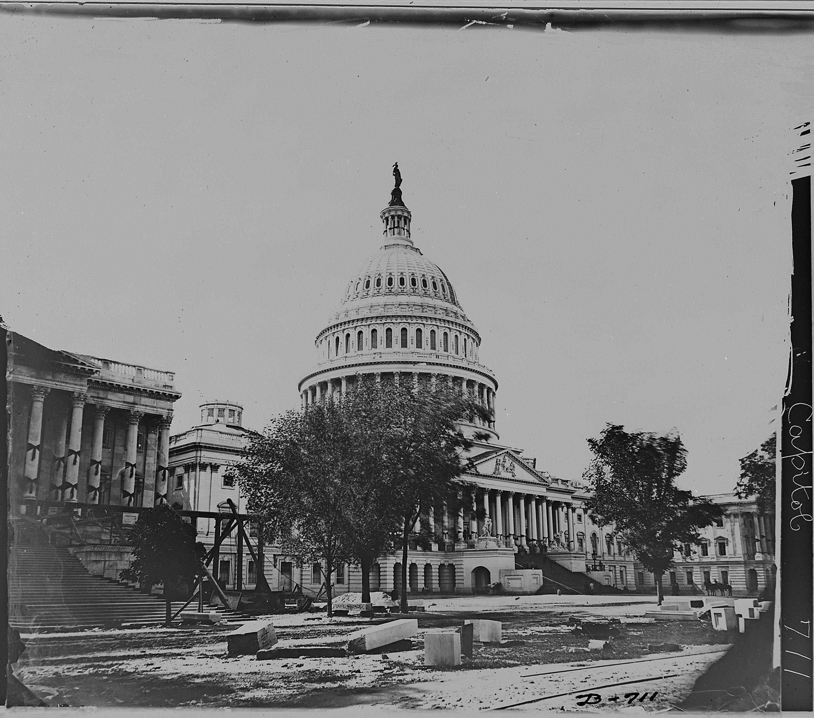

Directions: Read the full text, then answer the questions at the end. This lesson teaches the Klan's violence in testimony and text, stated plainly. No picture of the Klan, of its riders, or of any act of violence appears in this lesson, by design.
Six former Confederate soldiers founded the Ku Klux Klan at Pulaski, Tennessee, in 1866, at first, by their own account, as a social club. Within a year the club had become something else. Delegates met at Nashville in 1867 and organized the Klan as an Invisible Empire, a shadow government of local dens, written rituals, and officers under borrowed titles. Nathan Bedford Forrest, the former Confederate cavalry general and Memphis slave trader, was elected its first Grand Wizard. The disguise was the point as much as the organization. A man under a sheet and a false face could ride through his own county at night, threaten his neighbors, and sit beside them in church or in court the next morning, unrecognized and unpunished.
The Klan's method was night riding. Mounted men in disguises rode after dark to the houses of their targets, called them out by name, and whipped or shot them. The timing was the message. Raids fell before elections, at school terms' opening, and at contract settlements, the moments when the new order touched daily life. The targets were chosen the same way: Black voters and Republican organizers first, then teachers in the freedmen's schools, officeholders, and white southerners who worked with the Reconstruction governments. A whipping was aimed at one man and addressed to a whole community. It taught every voter, teacher, and juror in the county what the price of the new politics could be.
Abram Colby was a Georgia freedman elected to the state legislature, an organizer who carried Black voters to the Republican ticket. On October 29, 1869, Klansmen broke open his door, dragged him from his house to the woods, and whipped him for three hours. Two days before, they had offered him $5,000 to change sides, and $2,500 in cash to let another man take his seat in the legislature. He told them he would not do it if they gave him all the county was worth. Under the whipping he said the same: if there was an election tomorrow, he would vote the Radical ticket. In 1872 Colby carried the account to a congressional committee, named the standing of the men who had whipped him, a lawyer, a doctor, and farmers among them, and put his refusal on the national record.
The Klan's own chief tried to call it off. In January 1869 Forrest ordered the organization dissolved, declaring that its disguises had been taken up by men he could not control and its violence had escaped his orders. Dens kept riding anyway, under the Klan's name or no name at all. When a congressional committee questioned Forrest in 1871, he denied directing the violence, denied knowledge of outrages committed as policy, and presented himself as a man who had worked to calm his section. Congress heard the denial from the Grand Wizard and the testimony from men the riders had visited, and had to decide which account described the South its laws were supposed to govern.
Congress answered with law built for the emergency. In 1870 and 1871 it passed three Enforcement Acts. The acts made it a federal crime to conspire against citizens' constitutional rights, to interfere with voting by force or threat, or to ride in disguise against the rights the Fourteenth and Fifteenth Amendments had written. They placed federal supervisors at the polls to watch registration and counting, and they empowered federal marshals and their deputies to guard polling places, arrest offenders, and summon posses in counties whose own officers would not act. Cases would be tried in federal court, before federal judges and juries. The settlement Congress had written in amendments now had an enforcement arm of its own, built to reach past state governments that protected the riders.
The third act, the Ku Klux Klan Act of April 1871, went furthest. It made conspiracy under color of state law to deprive citizens of constitutional rights a federal offense, and it authorized the president to use the army against such combinations. President Grant used it where the terror was densest. In October 1871 he proclaimed the armed combinations in nine South Carolina counties an insurrection, ordered them to disperse, and suspended habeas corpus in those counties. Troops and marshals made hundreds of arrests. Prosecutors brought hundreds of indictments, and Klansmen pleaded guilty, were convicted, or fled the state. By 1872 the first Klan in South Carolina was broken, its dens dissolved and its night riding stopped, in the one place the federal government had used the full power the acts supplied.
The breaking proved a point the rest of the unit will test. Federal power, used at full strength, worked: where marshals, troops, prosecutors, and courts moved together, the Invisible Empire collapsed within a year. But the power rested on a premise outside the statute book. It depended on a president willing to proclaim an insurrection in an American state, a Congress willing to fund marshals and courts, and a northern public willing to sustain both. The Klan the acts broke was the first Klan, an organization of disguises and dens. The violence it had pioneered did not need the disguise to survive, and in the middle seventies it would return in rifle clubs and leagues that rode by daylight. What the federal answer of 1871 could not supply was its own permanence.

1. State how the Klan was founded and organized, naming the town and year of its founding, the name it took as an organization, the year of its Nashville organizing, and the man elected its first Grand Wizard, and state what the disguise allowed a rider to do.
2. State the Klan's method and its aim, naming the method, the three moments raids were timed to, and four kinds of targets, and state what a single whipping was meant to teach.
3. State Abram Colby's account in order, naming his office, the date of the attack, the two sums he was offered and what each was for, the answer he gave under the whipping, and the year and the body before which he testified.
4. State what the Enforcement Acts did, naming their years, three acts they made federal crimes, the two kinds of federal officers they placed at the polls and in the counties, and where the cases would be tried.
5. In a short paragraph, answer the lesson question from the reading. State what the Klan's terror aimed at, what it took to break the first Klan in South Carolina, naming the proclamation's month and year and the result by 1872, and what the federal answer depended on.
1. State how the Klan was founded and organized. Six former Confederate soldiers founded the Ku Klux Klan at Pulaski, Tennessee, in 1866, at first as a social club. Delegates meeting at Nashville in 1867 organized it as the Invisible Empire, with local dens, written rituals, and officers under borrowed titles, and Nathan Bedford Forrest, the former Confederate cavalry general and Memphis slave trader, was elected its first Grand Wizard. The disguise let a rider threaten his neighbors at night and sit beside them in church or court the next morning, unrecognized and unpunished.
2. State the method and the aim. The method was night riding: mounted men in disguises rode after dark to their targets' houses, called them out by name, and whipped or shot them. Raids were timed to elections, to the opening of school terms, and to contract settlements. The targets were Black voters, Republican organizers, teachers in the freedmen's schools, officeholders, and white southerners who worked with the Reconstruction governments. A whipping was aimed at one man and addressed to a whole community, teaching every voter, teacher, and juror in the county the price of the new politics.
3. State Colby's account in order. Abram Colby, a Georgia freedman elected to the state legislature, was attacked on October 29, 1869, when Klansmen broke open his door, dragged him to the woods, and whipped him for three hours. Two days earlier they had offered him $5,000 to change sides and $2,500 in cash to let another man take his legislative seat, and he refused both. Under the whipping he answered that if there was an election tomorrow he would vote the Radical ticket. In 1872 he testified before a congressional committee, naming a lawyer, a doctor, and farmers among the men who had whipped him.
4. State what the Enforcement Acts did. Congress passed the three Enforcement Acts in 1870 and 1871. They made it a federal crime to conspire against citizens' constitutional rights, to interfere with voting by force or threat, and to ride in disguise against the rights written in the Fourteenth and Fifteenth Amendments. They placed federal supervisors at the polls and empowered federal marshals and their deputies to guard polling places, arrest offenders, and summon posses. Cases were tried in federal court, before federal judges and juries.
5. Answer the lesson question from the reading. The Klan's terror aimed at the Reconstruction electorate: it worked by night riding against voters, organizers, teachers, and officeholders to destroy the Republican governments' base and teach whole counties the price of the new politics. Breaking the first Klan took the full federal power of the Enforcement Acts, and in South Carolina it took President Grant's October 1871 proclamation of insurrection in nine counties, the suspension of habeas corpus there, troops and marshals making hundreds of arrests, and hundreds of federal indictments, after which the Klan in that state was broken by 1872. The answer depended on a president, a Congress, and a northern public willing to sustain it, a premise the statute book could not supply for itself.